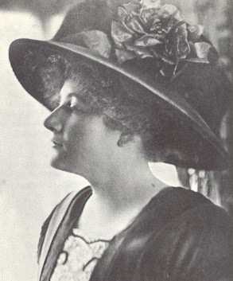
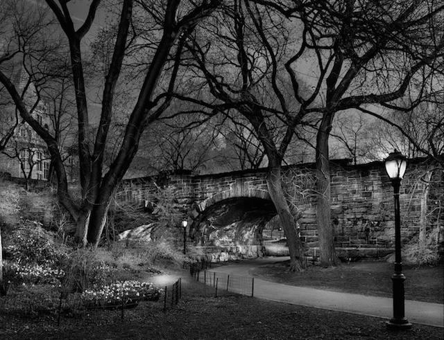
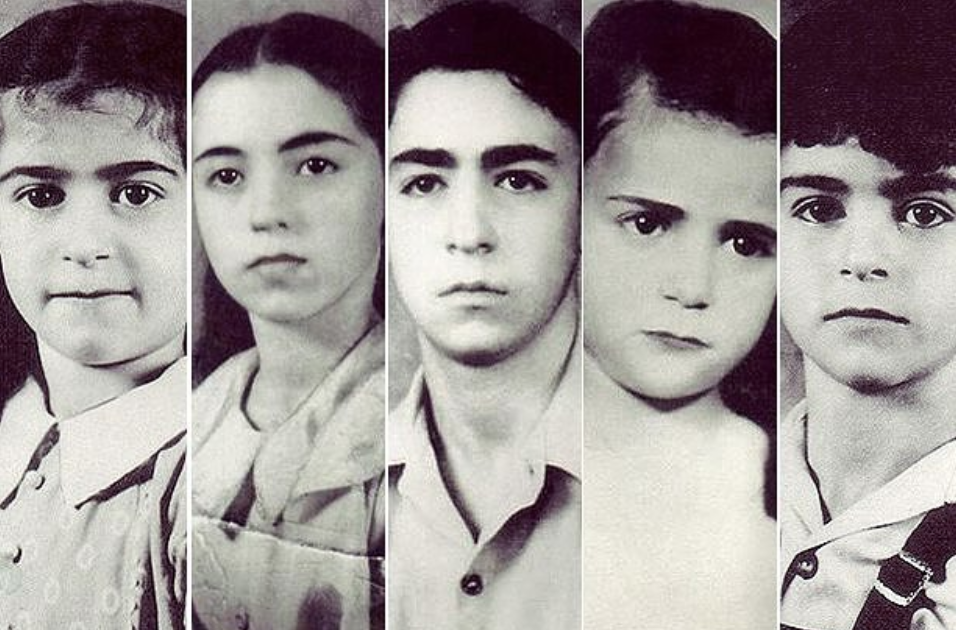

The Daily Case
Dorothy is Missing
Historic Mysteries
Shelly Barclay
Dorothy Harriett Camille Arnold was born into a wealthy family in 1884. She was the daughter of the head of an import company and the niece of Supreme Court Justice, Rufus Peckham. She was an heiress and a socialite. She was educated at Bryn Mawr and was an aspiring writer at the time of her disappearance. At the age of 25, she vanished from the streets of New York City, never to be seen or heard from again.
On December 12, 1910, the day of her disappearance, Dorothy Arnold left her home in New York City at around eleven a.m. She told her mother that she would be spending the day shopping for an evening gown for an upcoming event. Mrs. Arnold asked her if she would like company, but Dorothy said no. This was not unusual because her mother was thought to be in poor health. Dorothy left the house with the clothes on her back and little more than twenty-five dollars in her possession. She was carrying a large muff, in which she could have hidden a small amount of clothing. However, after her disappearance, her family noted that none of her clothes was missing.
After leaving her house, Dorothy Arnold went to a local candy store where she bought some chocolate on the Arnold family credit. From there she went on to Brentanos Bookstore on Fifth avenue and Twenty Seventh Street. She purchased a book, again on the Arnold family credit. When she left the store she ran into her friend, Gladys King. Her disappearance occurred immediately after she met with Gladys. No one else recalled seeing Dorothy Arnold that day.
Not one person who saw Dorothy on the day of her disappearance noticed anything unusual about her behavior. She was not seen purchasing the dress that she spoke of, so it can be assumed that either she lied or she was stopped in some way before she could fulfill her plans. On the day of her disappearance, she was dressed in the height of fashion and was a familiar face in New York at the time. Therefore, it is unlikely that she could have made it far without being noticed.
That evening, when Dorothy had not returned home for dinner, the Arnold family began making inquiries among her friends. They were not able to turn up any news of their daughter. Oddly enough, later on that evening, a friend of Dorothy called for her and Mrs. Arnold told her that Dorothy was in bed with a headache. Even stranger is the fact that her parents were aware of her disappearance and did not call the police. Instead, they contacted a lawyer named Keith, who was a friend of their son John.
Keith arrived at the Arnold house and did a thorough inspection of Dorothy’s room. He turned up nothing suspicious save some badly burned papers in the fireplace; they were unreadable. There was nothing missing and there was no evidence to suggest that she had run away. Keith continued his investigation by going to hospitals and morgues in search of the young woman. This was yet another dead end.
Six weeks after Dorothy’s disappearance her family finally contacted the police. The police wanted to make the news of Dorothy’s disappearance public, but Mr. Arnold was strongly against it. Three days later, he realized that he had no choice and the press was alerted. The police investigation turned out to be futile and the case has since gone cold.
Very few clues exist that may tell us what happened to Dorothy Arnold. The clues that do exist seem to be easily explained away. For example, Dorothy had a secret engagement with a man named Junior Griscom of which her family disapproved. This may sound fishy, but there was absolutely no evidence that she and Junior had a falling out or had run away together. In fact, Junior put out several ads imploring Dorothy to contact him, but to no avail. He eventually moved on with his life.
Another theory was that Dorothy was heartbroken that her parents mocked her for wanting to become a writer and because two of her stories had been rejected by publishers. The idea is that she might have committed suicide believing that she was a failure. It is true that she had been mocked by her family and rejected by publishers, but no one had evidence that she was anything but happy on the day she disappeared. She showed no signs of suicidal tendencies, she left no note and her body was not found at any of the likely locations for a suicide.
Dorothy’s father believed that she had not disappeared, but had been killed while walking through Central Park. Once again, there is no evidence to support the theory. The only thing that is certain is that Dorothy Arnold left her home in a happy state, went shopping and promptly disappeared never to be seen or heard from again.
Reccomended Cases:
Children Who went up in Smoke
Laren Abbott
